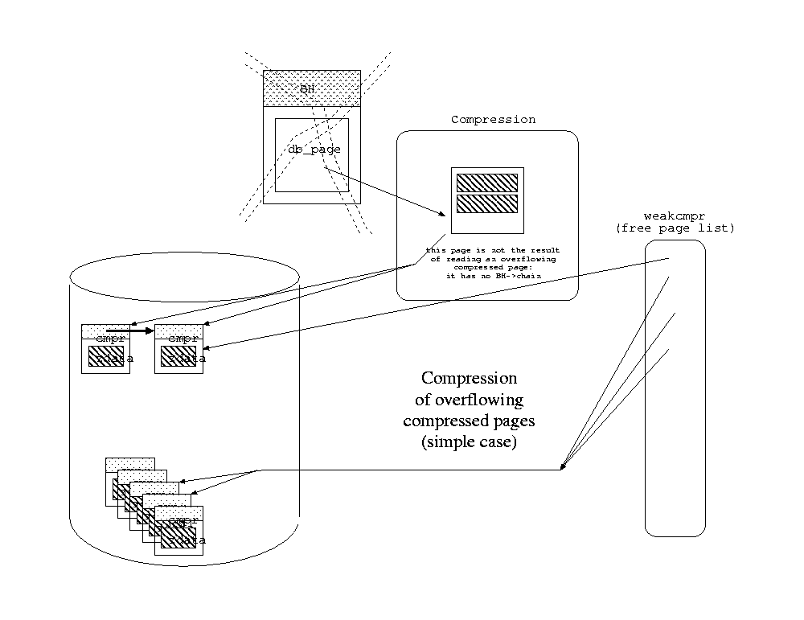

Mifluz is a full text indexing library.
--- The Detailed Node Listing ---
Internals
Compression
Reference
htdb_dump
htdb_stat
htdb_load
mifluzdump
mifluzload
mifluzsearch
WordContext
WordList
WordDict
WordListOne
WordKey
WordKeyInfo
WordType
WordDBInfo
WordRecordInfo
WordRecord
WordReference
WordCursor
WordCursorOne
WordMonitor
Configuration
mifluz
First of all, mifluz is at beta stage.
The purpose of mifluz is to provide a C++ library to store a full
text inverted index. To put it briefly, it allows storage of occurrences of
words in such a way that they can later be searched. The basic idea of
an inverted index is to associate each unique word with a list of
documents in which they appear. This list can then be searched to locate
the documents containing a specific word.
Implementing a library that manages an inverted index is a very easy
task when there is a small number of words and documents. It becomes a
lot harder when dealing with a large number of words and
documents. mifluz has been designed with the further upper limits
in mind : 500 million documents, 100 giga words, 18 million document
updates per day. In the present state of mifluz, it is possible to
store 100 giga words using 600 giga bytes. The best average insertion
rate observed as of today 4000 key/sec on a 1 giga byte index.
mifluz has two main characteristics : it is very simple (one
might say stupidly simple :-) and uses 100% of the size of the indexed text for
the index. It is simple because it provides only a few basic
functions. It does not contain document parsers (HTML, PDF
etc...). It does not contain a full text query parser. It does not
provide result display functions or other user friendly stuff. It only
provides functions to store word occurrences and retrieve them. The fact
that it uses 100% of the size of the indexed text is rather
atypical. Most well known full text indexing systems only use 30%. The
advantage mifluz has over most full text indexing systems is that
it is fully dynamic (update, delete, insert), uses only a controlled
amount of memory while resolving a query, has higher upper limits and has a
simple storage scheme. This is achieved by consuming more disk space.
In the following figure you can see the place of mifluz in an hypothetical full
text indexing system.
Query
Mifluz
Parser Switch
Indexer
mifluz.
The following list shows all the constraints imposed by mifluz.
It can also be seen as a list of functions provided by mifluz
that is more general than the API specification.
Now Available
Future
Constraints and Limitations
An atomic datum is something that must be manipulated as whole, with no possibility of splitting it into smaller parts. For instance a posting (Word, document identifier and position) is an atomic datum: to manipulate it in memory it has to reside completely in memory. By contrast a postings list is not atomic. Manipulating a postings list can be done without loading all the postings list in memory.
In all of the literature dealing with full text indexing a collection of documents is considered to be a flat set of documents containing words. Each document has a unique name. The inverted index associates terms found in the documents with a list of unique document names.
We found it more interesting to consider that the document names have a hierarchical structure, just like path names in file systems. The main difference is that each component of the document name (think path name in file system) may contain terms.
As shown in the figure above we can consider that the first component of the document name is the name of a collection, the second the logical name of a set of documents within the collection, the third the name of the document, the fourth the name of a part of the document.
This logical structure may be applied to URLs in the following way : there is only one collection, it contains servers (document sets) containing URLs (documents) containing tags such as TITLE (document parts).
This logical structure may be also be applied to databases in the following way : there is one collection for each database, it contains tables (document set) containing fields (document) containing records (document part).
What does this imply for full text indexing ? Instead of having only one dictionary to map the document name to a numerical identifier (this is needed to compress the postings for a term), we must have a dictionary for each level of the hierarchy.
Using the database example again:
When coding the document identifier in the postings for a term, we have to code a list of numerical identifiers instead of a single numerical identifier. Alternatively one could see the document identifier as an aribtrary precision number sliced in parts.
The advantage of this document naming scheme are:
uniq query operator can be trivially implemented. This is mostly
useful to answer a query such as : I want URLs matching the word foo
but I only want to see one URL for a given server (avoid the problem of
having the first 40 URLs for a request on the same server).
Of course, the suggested hierarchy semantic is not mandatory and may be redefined according to sorting needs. For instance a relevance ranking algorithm can lead to a relevance ranking number being inserted into the hierarchy.
The space overhead implied by this name scheme is quite small for databases and URL pools. The big dictionary for URL pools maps URL to identifiers. The dictionary for tags (TITLE etc..) is only 10-50 at most. The dictionary for site names (www.domain.com) will be ~1/100 of the dictionary for URLs, assuming you have 100 URLs for a given site. For databases the situation is even better: the big dictionary would be the dictionary mapping rowids to numerical identifiers. But since rowids are already numerical we don't need this. We only need the database name, field name and table name dictionaries and they are small. Since we are able to encode small numbers using only a few bits in postings, the overhead of hierarchical names is acceptable.
Efficient management of the data storage space is an important issue of the management of inverted indexes. The needs of an inverted index are very similar to the needs of a regular file system. We need:
All these functionalities are provided by file systems and kernel
services. Since we also wanted the mifluz library to be portable
we chose the Berkeley DB library that implements all the services
above. The transparent compression is not part of Berkeley DB and is
implemented as a patch to Berkeley DB (version 3.1.14).
Based on these low level services, Bekeley DB also implements a Btree
structure that mifluz used to store the postings. Each posting is
an entry in the Btree structure. Indexing 100 million words implies creating
100 million entries in the Btree. When transparent compression is
used and assuming we have 6 byte words and a document identifier using
7 * 8 bits, the average disk size used per entry is 6 bytes.
Unique word statistics are also stored in the inverted index. For each unique word, an entry is created in a dictionnary and associated with a serial number (the word identifier and the total number of occurrences.
The cache memory used by mifluz has a tremendous impact on
performance. It is set by the wordlist_cache_size attribute
(see WordList(3) and mifluz(3)). It holds pages from the inverted index
in memory (uncompressed if the file is compressed) to reduce disk
access. Pages migrate from disk to memory using a LRU.
Each page in the cache is really a node of the B-Tree used to store the inverted
index entries. The internal pages are intermediate nodes that mifluz must
traverse each time a key is searched. It is therefore very important to keep them in memory.
Fortunately they only count for 1% of the total size of the index, at most.
The size of the cache must at least include enough space for the internal pages.
The other factors that must be taken into account in sizing the cache are highly dependant on the application. A typical case is insertion of many random words in the index. In this case two factors are of special importance:
repartition of unique words
The general rule is : estimate or calculate how many unique words fill
90% of your index. Multiply this number by the pagesize and increase your
cache by that amount.
See wordlist_page_size attribute in WordList(3) or mifluz(3).
order of numbers following the key
foo 100 foo 103
rather than
foo 103 foo 100
This hint must not be considered in isolation but with careful analysis of the distribution of the key components (word and numbers). For instance it does not matter much if a random key follows the word as long as the range of values of the number is small.
The conclusion is that the cache size should be at least 1% of the total index size (uncompressed) plus a number of bytes that depends on the usage pattern.
The key structure is what uniquely identifies each word that is inserted in the inverted index. A key is made of a string (which is the word being indexed), and a document identifier (which is really a list of numbers), as discussed above.
The exact structure of the inverted index key must
be specified in the configuration parameter
"wordlist_wordkey_description". See the WordKeyInfo(3) manual
page for more information on the format.
We will focus on three examples that illustrate common usage.
First example: a very simple inverted index would be to associate each word occurrence to an URL (coded as a 32 bit number). The key description would be:
Word 8/URL 32
Second example: if building a full text index of the content of a database, you need to know in which field, table and record the word appeared. This makes three numbers for the document id.
Only a few bits are needed to encode the field and table name (let's say you have a maximum of 16 field names and 16 table names, 4 bits each is enough). The record number uses 24 bits because we know we won't have more than 16 M records.
The structure of the key would then be:
Word 8/Table 4/Field 4/Record 32
When you have more than one field involved in a key you must chose the order in which they appear. It is mandatory that the Word is first. It is the part of the key that has highest precedence when sorting. The fields that follow have lower and lower precedence.
Third example: we go back to the first example and imagine we have a relevance ranking function that calculates a value for each word occurrence. By inserting this relevance ranking value in the inverted index key, all the occurrences will be sorted with the most relevant first.
Word 8/Rank 5/URL 32
Compressing the index reduces disk space consumption and speeds up the indexing by reducing I/O.
Compressing at the mifluz level would imply choosing complicated key
structures, slowing down and complexifying insert and delete
operations. We have chosen to do the compression within Berkeley DB in
the memory pool subsystem. Berkeley DB keeps fixed size pages in a
memory cache, when it is full it writes the least recently used pages to
disk. When a page is needed Berkeley DB looks for it in memory and
retrieves it from disk if its not in memory. The compression/uncompression
occurs when a page moves between the memory pool and the disk.
Berkeley DB uses fixed size pages. Suppose, for example that our compression
algorithm can compress by a factor of 8 in most cases, we use a disk
page size that's 1/8 of the memory page size. However there are
exceptions. Some pages won't compress well and therefore won't fit on
one disk page. Extra pages are therefore allocated and are linked into a
chained list. Allocating extra pages implies that some pages may become
free as a result of a better compression.

The mifluz classes WordDBCompress and WordBitCompress do the compression/decompression
work. From the list of keys stored in a page it extracts several lists
of numbers. Each list of numbers has common statistical properties that
allow good compression.
The WordDBCompress_compress_c and WordDBCompress_uncompress_c functions are C callbacks that are called by the the page compression code in BerkeleyDB. The C callbacks then call the WordDBCompress compress/uncompress methods. The WordDBCompress creates a WordBitCompress object that acts as a buffer holding the compressed stream.
Compression algorithm.
Most DB pages contain redundant data because mifluz chose
to store one word occurrence per entry.
Because of this choice the pages have a very simple structure.
Here is a real world example of what a page can look like: (key structure: word identifier + 4 numerical fields)
756 1 4482 1 10b 756 1 4482 1 142 756 1 4484 1 40 756 1 449f 1 11e 756 1 4545 1 11 756 1 45d3 1 545 756 1 45e0 1 7e5 756 1 45e2 1 830 756 1 45e8 1 545 756 1 45fe 1 ec 756 1 4616 1 395 756 1 461a 1 1eb 756 1 4631 1 49 756 1 4634 1 48 .... etc ....
To compress we chose to only code differences between adjacent entries. A flag is stored for each entry indicating which fields have changed. When a field is different from the previous one, the compression stores the difference which is likely to be small since the entries are sorted.
The basic idea is to build columns of numbers, one for each field, and then compress them individually. One can see that the first and second columns will compress very well since all the values are the same. The third column will also compress well since the differences between the numbers are small, leading to a small set of numbers.
The development of mifluz is shared between Senga
(www.senga.org) and the Ht://dig Group (dev.htdig.org). Part of
the distribution comes from the Ht://dig CVS tree and part from
the Senga CVS tree. The idea is to share efforts between two
development groups that have very similar needs. Since Senga and
Ht://dig are both developped under the GPL licence, such
cooperation occurs naturally.
To compile a program using the mifluz library use something that looks
like the following:
gcc -o word -I/usr/local/include -L/usr/local/lib -lmifluz word.cc
dump the content of an inverted index in Berkeley DB fashion
htdb_dump [-klNpWz] [-C cachesize] [-d ahr] [-f file] [-h home] [-s subdb] db_file
htdb_dump is a slightly modified version of the standard Berkeley DB db_dump utility.
The htdb_dump utility reads the database file
db_file
and
writes it to the standard output using a portable flat-text format
understood by the
htdb_load
utility. The argument
db_file
must be a file produced using
the Berkeley DB library functions.
Initialize WordContext(3) before dumping. With the
-z
flag allows to dump inverted indexes using the mifluz(3) specific
compression scheme. The MIFLUZ_CONFIG environment variable must be
set to a file containing the mifluz(3) configuration.
The
db_file
is compressed. If
-W
is given the
mifluz(3) specific compression scheme is used. Otherwise the default
gzip compression scheme is used.
Dump the specified database in a format helpful for debugging the Berkeley DB library routines.
Display all information.
Display only page headers.
Do not display the free-list or pages on the free list. This mode is used by the recovery tests.
Write to the specified
file
instead of to the standard output.
Specify a home directory for the database.
As Berkeley DB versions before 2.0 did not support the concept of a
database home.
Dump record numbers from Queue and Recno databases as keys.
List the subdatabases stored in the database.
Do not acquire shared region locks while running. Other problems such
as potentially fatal errors in Berkeley DB will be ignored as well. This option
is intended only for debugging errors and should not be used under any
other circumstances.
If characters in either the key or data items are printing characters (as defined by isprint (3)), use printing characters in file to represent them. This option permits users to use standard text editors and tools to modify the contents of databases.
Note, different systems may have different notions as to what characters
are considered
printing characters
, and databases dumped in
this manner may be less portable to external systems.
Specify a subdatabase to dump. If no subdatabase is specified, all
subdatabases found in the database are dumped.
Write the version number to the standard output and exit.
Dumping and reloading Hash databases that use user-defined hash functions will result in new databases that use the default hash function. While using the default hash function may not be optimal for the new database, it will continue to work correctly.
Dumping and reloading Btree databases that use user-defined prefix or comparison functions will result in new databases that use the default prefix and comparison functions. In this case, it is quite likely that the database will be damaged beyond repair permitting neither record storage or retrieval.
The only available workaround for either case is to modify the sources
for the
htdb_load
utility to load the
database using the correct hash, prefix and comparison functions.
DB_HOME If the -h option is not specified and the environment variable DB_HOME is set, it is used as the path of the database home.
MIFLUZ_CONFIG file name of configuration file read by WordContext(3). Defaults to ~/.mifluz.
displays statistics for Berkeley DB environments.
htdb_stat [-celmNtzW] [-C Acfhlmo] [-d file [-s file]] [-h home] [-M Ahlm]
htdb_stat is a slightly modified version of the standard Berkeley DB db_stat utility which displays statistics for Berkeley DB environments.
Initialize WordContext(3) before gathering statistics. With the
-z
flag allows to gather statistics on inverted indexes generated
with the mifluz(3) specific
compression scheme. The MIFLUZ_CONFIG environment variable must be
set to a file containing the mifluz(3) configuration.
The
file
is compressed. If
-W
is given the
mifluz(3) specific compression scheme is used. Otherwise the default
gzip compression scheme is used.
Display internal information about the lock region. (The output from this option is often both voluminous and meaningless, and is intended only for debugging.)
Display all information.
Display lock conflict matrix.
Display lock and object free lists.
Display lockers within hash chains.
Display region memory information.
Display objects within hash chains.
Display lock region statistics.
Display database statistics for the specified database.
If the database contains subdatabases, the statistics
are for the database or subdatabase specified, and not for the database
as a whole.
Display current environment statistics.
Specify a home directory for the database.
Display log region statistics.
Display internal information about the shared memory buffer pool. (The output from this option is often both voluminous and meaningless, and is intended only for debugging.)
Display all information.
Display buffers within hash chains.
Display buffers within LRU chains.
Display region memory information.
Display shared memory buffer pool statistics.
Do not acquire shared region locks while running. Other problems such
as potentially fatal errors in Berkeley DB will be ignored as well. This option
is intended only for debugging errors and should not be used under any
other circumstances.
Display database statistics for the specified subdatabase of the
database specified with the
-d
flag.
Display transaction region statistics.
Write the version number to the standard output and exit.
Only one set of statistics is displayed for each run, and the last option specifying a set of statistics takes precedence.
Values smaller than 10 million are generally displayed without any special notation. Values larger than 10 million are normally displayed as <number>M .
The htdb_stat utility attaches to one or more of the Berkeley DB shared memory regions. In order to avoid region corruption, it should always be given the chance to detach and exit gracefully. To cause htdb_stat to clean up after itself and exit, send it an interrupt signal (SIGINT).
DB_HOME If the -h option is not specified and the environment variable DB_HOME is set, it is used as the path of the database home.
MIFLUZ_CONFIG file name of configuration file read by WordContext(3). Defaults to ~/.mifluz.
displays statistics for Berkeley DB environments.
htdb_load [-nTzW] [-c name=value] [-f file] [-h home] [-C cachesize] [-t btree | hash | recno] db_file
The htdb_load utility reads from the standard input and loads it into the database db_file . The database db_file is created if it does not already exist.
The input to htdb_load must be in the output format specified by the htdb_dump utility, or as specified for the -T below.
Initialize WordContext(3) before loading. With the
-z
flag allows to load inverted indexes using the mifluz(3) specific
compression scheme. The MIFLUZ_CONFIG environment variable must be
set to a file containing the mifluz(3) configuration.
The
db_file
is compressed. If
-W
is given the
mifluz(3) specific compression scheme is used. Otherwise the default
gzip compression scheme is used.
Specify configuration options for the DB structure
ignoring any value they may have based on the input.
The command-line format is
name=value
.
See
Supported Keywords
for
a list of supported words for the
-c
option.
Read from the specified
input
file instead of from
the standard input.
Specify a home directory for the database.
If a home directory is specified, the database environment is opened using
the
DB_INIT_LOCK
,
DB_INIT_LOG
,
DB_INIT_MPOOL
,
DB_INIT_TXN
and
DB_USE_ENVIRON
flags to
DBENV->open. This means that htdb_load can be used to load
data into databases while they are in use by other processes. If the
DBENV->open call fails, or if no home directory is specified, the
database is still updated, but the environment is ignored, e.g., no
locking is done.
Do not overwrite existing keys in the database when loading into an
already existing database.
If a key/data pair cannot be loaded into the database for this reason,
a warning message is displayed on the standard error output and the
key/data pair are skipped.
The -T option allows non-Berkeley DB applications to easily load text files into databases.
If the database to be created is of type Btree or Hash, or the keyword keys is specified as set, the input must be paired lines of text, where the first line of the pair is the key item, and the second line of the pair is its corresponding data item. If the database to be created is of type Queue or Recno and the keywork keys is not set, the input must be lines of text, where each line is a new data item for the database.
A simple escape mechanism, where newline and backslash (\) characters are special, is applied to the text input. Newline characters are interpreted as record separators. Backslash characters in the text will be interpreted in one of two ways: if the backslash character precedes another backslash character, the pair will be interpreted as a literal backslash. If the backslash character precedes any other character, the two characters following the backslash will be interpreted as hexadecimal specification of a single character, e.g., \0a is a newline character in the ASCII character set.
For this reason, any backslash or newline characters that naturally occur in the text input must be escaped to avoid misinterpretation by htdb_load
If the
-T
option is specified, the underlying access method type
must be specified using the
-t
option.
Specify the underlying access method. If no -t option is specified, the database will be loaded into a database of the same type as was dumped, e.g., a Hash database will be created if a Hash database was dumped.
Btree and Hash databases may be converted from one to the other. Queue
and Recno databases may be converted from one to the other. If the
-k
option was specified on the call to htdb_dump then Queue
and Recno databases may be converted to Btree or Hash, with the key being
the integer record number.
Write the version number to the standard output and exit.
The htdb_load utility attaches to one or more of the Berkeley DB shared memory regions. In order to avoid region corruption, it should always be given the chance to detach and exit gracefully. To cause htdb_load to clean up after itself and exit, send it an interrupt signal (SIGINT).
The htdb_load utility exits 0 on success, 1 if one or more key/data pairs were not loaded into the database because the key already existed, and >1 if an error occurs.
The following keywords are supported for the -c command-line option to the htdb_load utility. See DB->open for further discussion of these keywords and what values should be specified.
The parenthetical listing specifies how the value part of the name=value pair is interpreted. Items listed as (boolean) expect value to be 1 (set) or 0 (unset). Items listed as (number) convert value to a number. Items listed as (string) use the string value without modification.
bt_minkey (number)
db_lorder (number)
db_pagesize (number)
duplicates (boolean)
h_ffactor (number)
h_nelem (number)
keys (boolean)
re_len (number)
re_pad (string)
recnum (boolean)
renumber (boolean)
subdatabase (string)
DB_HOME If the -h option is not specified and the environment variable DB_HOME is set, it is used as the path of the database home.
MIFLUZ_CONFIG file name of configuration file read by WordContext(3). Defaults to ~/.mifluz.
dump the content of an inverted index.
mifluzdump file
mifluzdump writes on
stdout
a complete ascii description
of the
file
inverted index using the
WordList::Write
method.
MIFLUZ_CONFIG file name of configuration file read by WordContext(3). Defaults to ~/.mifluz.
load the content of an inverted index.
mifluzload file
mifluzload reads from
stdout
a complete ascii description
of the
file
inverted index using the
WordList::Read
method.
MIFLUZ_CONFIG file name of configuration file read by WordContext(3). Defaults to ~/.mifluz.
search the content of an inverted index.
mifluzsearch -f words [options]
mifluzsearch searches a mifluz index for documents matching a Alt*Vista expression (simple syntax).
MIFLUZ_CONFIG file name of configuration file read by WordContext(3). Defaults to ~/.mifluz.
read configuration and setup mifluz context.
#include <mifluz.h> WordContext context;
The WordContext object must be the first object created. All other objects (WordList, WordReference, WordKey and WordRecord) are allocated via the corresponding methods of WordContext (List, Word, Key and Record respectively).
The WordContext object contains a
Configuration
object
that holds the configuration parameters used by the instance.
If a configuration parameter is changed, the
ReInitialize
method should be called to take them in account.
For more information on the configuration attributes and a complete list of attributes, see the mifluz(3) manual page.
wordlist_monitor {true|false} (default false)
WordMonitor
instance to gather statistics and
build reports.
WordContext()
~/.mifluz
configuration file or
/etc/mifluz.conf
. See the mifluz
manual page for a complete list of the configuration attributes.
WordContext(const Configuration &config)
WordContext(const ConfigDefaults *array)
void Initialize(const Configuration &config)
When calling Initialize a second time, one must ensure that all WordList and WordCursor objects have been destroyed. WordList and WordCursor internal state depends on the current WordContext that will be lost by a second call.
For those interested by the internals, the Initialize function maintains a Berkeley DB environment (DB_ENV) in the following way:
First invocation:
Initialize -> new DB_ENV (thru WordDBInfo)
Second invocation:
Initialize -> delete DB_ENV -> new DB_ENV (thru WordDBInfo)
int Initialize(const ConfigDefaults* config_defaults = 0)
Configuration
object from the file pointed to by the
MIFLUZ_CONFIG environment variable or ~/.mifluz or /etc/mifluz.conf.
The
config_defaults
argument, if provided, is passed to
the
Configuration
object using the
Defaults
method.
The
Initialize(const Configuration &)
method is then called
with the
Configuration
object.
Return OK if success, NOTOK otherwise.
Refer to the
Configuration
description for more information.
int ReInitialize()
Configuration
object and
rebuild it. May be used when the configuration is changed to
take these changes in account.
Return OK if success, NOTOK otherwise.
const WordType& GetType() const
WordType& GetType()
const WordKeyInfo& GetKeyInfo() const
WordKeyInfo& GetKeyInfo()
const WordRecordInfo& GetRecordInfo() const
WordRecordInfo& GetRecordInfo()
const WordDBInfo& GetDBInfo() const
WordDBInfo& GetDBInfo()
const WordMonitor* GetMonitor() const
WordMonitor* GetMonitor()
const Configuration& GetConfiguration() const
Configuration& GetConfiguration()
WordList* List()
WordReference* Word()
WordReference* Word(const String& key0, const String& record0)
WordReference* Word(const String& word)
WordRecord* Record()
WordKey* Key()
WordKey* Key(const String& word)
WordKey* Key(const WordKey& other)
MIFLUZ_CONFIG file name of configuration file read by WordContext(3). Defaults to ~/.mifluz. or /etc/mifluz.conf
abstract class to manage and use an inverted index file.
#include <mifluz.h> WordContext context; WordList* words = context->List(); delete words;
WordList is the
mifluz
equivalent of a database handler. Each
WordList object is bound to an inverted index file and implements the
operations to create it, fill it with word occurrences and search
for an entry matching a given criterion.
WordList is an abstract class and cannot be instanciated. The List method of the class WordContext will create an instance using the appropriate derived class, either WordListOne or WordListMulti. Refer to the corresponding manual pages for more information on their specific semantic.
When doing bulk insertions, mifluz creates temporary files that
contain the entries to be inserted in the index. Those files are
typically named
indexC00000000
. The maximum size of the
temporary file is
wordlist_cache_size
/ 2. When the maximum
size of the temporary file is reached, mifluz creates another temporary
file named
indexC00000001
. The process continues until mifluz
created 50 temporary file. At this point it merges all temporary files
into one that replaces the first
indexC00000000
. Then it continues
to create temporary file again and keeps following this algorithm until
the bulk insertion is finished. When the bulk insertion is finished,
mifluz has one big file named
indexC00000000
that contains
all the entries to be inserted in the index. mifluz inserts all the
entries from
indexC00000000
into the index and delete the
temporary file when done. The insertion will be fast since all the
entries in
indexC00000000
are already sorted.
The parameter
wordlist_cache_max
can be used to prevent the
temporary files to grow indefinitely. If the total cumulated size of
the
indexC*
files grow beyond this parameter, they are merged
into the main index and deleted. For instance setting this parameter
value to 500Mb garanties that the total size of the
indexC*
files will not grow above 500Mb.
For more information on the configuration attributes and a complete list of attributes, see the mifluz(3) manual page.
wordlist_extend {true|false} (default false)
wordlist_verbose <number> (default 0)
1 walk logic
2 walk logic details
3 walk logic lots of details
wordlist_page_size <bytes> (default 8192)
wordlist_cache_size <bytes> (default 500K)
wordlist_cache_max <bytes> (default 0)
wordlist_cache_inserts {true|false} (default false)
wordlist_compress {true|false} (default false)
inline WordContext* GetContext()
inline const WordContext* GetContext() const
virtual inline int Override(const WordReference& wordRef)
Key()
part of
the
wordRef
exists in the index, override it.
Returns OK on success, NOTOK on error.
virtual int Exists(const WordReference& wordRef)
inline int Exists(const String& word)
virtual int WalkDelete(const WordReference& wordRef)
Key()
part of
wordRef
, using the
Walk
method.
Returns the number of entries successfully deleted.
virtual int Delete(const WordReference& wordRef)
Key()
part of
wordRef.
Returns OK if deletion is successfull, NOTOK otherwise.
virtual int Open(const String& filename, int mode)
O_RDONLY
or
O_RDWR.
If mode is
O_RDWR
it can be or'ed with
O_TRUNC
to reset
the content of an existing inverted index.
Return OK on success, NOTOK otherwise.
virtual int Close()
virtual unsigned int Size() const
virtual int Pagesize() const
virtual WordDict *Dict()
const String& Filename() const
int Flags() const
inline List *Find(const WordReference& wordRef)
Key()
part of
wordRef.
The
List
returned
contains pointers to
WordReference
objects. It is
the responsibility of the caller to free the list. See List.h
header for usage.
inline List *FindWord(const String& word)
List
returned
contains pointers to
WordReference
objects. It is
the responsibility of the caller to free the list. See List.h
header for usage.
virtual List *operator [] (const WordReference& wordRef)
inline List *operator [] (const String& word)
virtual List *Prefix (const WordReference& prefix)
Key()
part of
wordRef.
In the
Key()
, the string
(accessed with
GetWord()
) matches any string that begins
with it. The
List
returned contains pointers to
WordReference
objects. It is the responsibility of the
caller to free the list.
inline List *Prefix (const String& prefix)
Key()
, the string (accessed with
GetWord()
) matches any string that begins with it. The
List
returned contains pointers to
WordReference
objects. It is the responsibility of the caller to free the
list.
virtual List *Words()
List
returned contains pointers to
String
objects. It is the responsibility of the caller
to free the list. See List.h header for usage.
virtual List *WordRefs()
List
returned contains pointers to
WordReference
objects. It is the responsibility of
the caller to free the list. See List.h header for usage.
virtual WordCursor *Cursor(wordlist_walk_callback_t callback, Object *callback_data)
virtual WordCursor *Cursor(const WordKey &searchKey, int action = HTDIG_WORDLIST_WALKER)
virtual WordCursor *Cursor(const WordKey &searchKey, wordlist_walk_callback_t callback, Object * callback_data)
virtual WordKey Key(const String& bufferin)
virtual WordReference Word(const String& bufferin, int exists = 0)
virtual WordReference WordExists(const String& bufferin)
virtual void BatchStart()
virtual void BatchEnd()
virtual int Noccurrence(const String& key, unsigned int& noccurrence) const
GetWord()
part of
key.
Returns OK on success, NOTOK otherwise.
virtual int Write(FILE* f)
WordReference
ASCII description.
Return OK on success, NOTOK otherwise.
virtual int WriteDict(FILE* f)
virtual int Read(FILE* f)
WordReference
ASCII descriptions from
f
,
returns the number of inserted WordReference or < 0 if an error
occurs. Invalid descriptions are ignored as well as empty
lines.
manage and use an inverted index dictionary.
#include <mifluz.h> WordList* words = ...; WordDict* dict = words->Dict();
WordDict maps strings to unique identifiers and frequency in the inverted index. Whenever a new word is found, the WordDict class can be asked to assign it a serial number. When doing so, an entry is created in the dictionary with a frequency of zero. The application may then increment or decrement the frequency to reflect the inverted index content.
The serial numbers range from 1 to 2^32 inclusive.
A WordDict object is automatically created by the WordList object and should not be created directly by the application.
WordDict()
int Initialize(WordList* words)
int Open()
words
data member. Return OK on success,
NOTOK otherwise.
int Remove()
int Close()
int Serial(const String& word, unsigned int& serial)
int SerialExists(const String& word, unsigned int& serial)
int SerialRef(const String& word, unsigned int& serial)
int Noccurrence(const String& word, unsigned int& noccurrence) const
int Normalize(String& word) const
int Ref(const String& word)
int Incr(const String& word, unsigned int incr)
int Unref(const String& word)
int Decr(const String& word, unsigned int decr)
int Put(const String& word, unsigned int noccurrence)
int Exists(const String& word) const
List* Words() const
WordDictCursor* Cursor() const
int Next(WordDictCursor* cursor, String& word, WordDictRecord& record)
Cursor
method. The word is
returned in the
word
argument and the record is returned in
the
record
argument.
On success the function returns 0, at the end of the dictionnary it
returns DB_NOTFOUND. The
cursor
argument is deallocated when
the function hits the end of the dictionnary or an error occurs.
WordDictCursor* CursorPrefix(const String& prefix) const
int NextPrefix(WordDictCursor* cursor, String& word, WordDictRecord& record)
CursorPrefix
method. The word is
returned in the
word
argument and the record is returned in
the
record
argument. The
word
is guaranteed to start with
the prefix specified to the
CursorPrefix
method.
On success the function returns 0, at the end of the dictionnary it
returns DB_NOTFOUND. The
cursor
argument is deallocated when
the function hits the end of the dictionnary or an error occurs.
int Write(FILE* f)
word serial frequency
, one by
line.
manage and use an inverted index file.
#include <mifluz.h> WordContext context; WordList* words = context->List(); WordList* words = WordListOne(context)
WordList is the
mifluz
equivalent of a database handler. Each
WordList object is bound to an inverted index file and implements the
operations to create it, fill it with word occurrences and search
for an entry matching a given criterion.
The general behavious of WordListOne is described in the WordList
manual page. It is prefered to create a WordListOne instance by
setting the
wordlist_multi
configuration parameter to false
and calling the
WordContext::List
method.
Only the methods that differ from WordList are listed here. All the methods of WordList are implemented by WordListOne and you should refer to the manual page for more information.
The Cursor methods all return a WordCursorOne instance cast to a WordCursor object.
WordListOne(WordContext* ncontext)
int DeleteCursor(WordDBCursor& cursor)
inverted index key.
#include <WordKey.h>
#define WORD_KEY_DOCID 1
#define WORD_KEY_LOCATION 2
WordList* words = ...;
WordKey key = words->Key("word 100 20");
WordKey searchKey;
words->Dict()->SerialExists("dog", searchKey.Get(WORD_KEY_WORD));
searchKey.Set(WORD_KEY_LOCATION, 5);
WordCursor* cursor = words->Key(searchKey);
Describes the key used to store a entry in the inverted index.
Each field in the key has a bit in the
set
member that says if it is set or not. This bit allows to
say that a particular field is
undefined
regardless of
the actual value stored. The methods
IsDefined, SetDefined
and
Undefined
are used to manipulate
the
defined
status of a field. The
Pack
and
Unpack
methods are used to convert to and from the disk storage representation
of the key.
Although constructors may be used, the prefered way to create a WordKey object is by using the WordContext::Key method.
The following constants are defined:
WORD_KEY_WORD
WORD_KEY_VALUE_INVALID
The ASCII description is a string with fields separated by tabs or white space.
Example: 200 <UNDEF> 1 4 2
Field 1: The word identifier or <UNDEF> if not defined
Field 2 to the end: numerical value of the field or <UNDEF> if
not defined
WordKey(WordContext* ncontext)
WordKey(WordContext* ncontext, const String& desc)
ASCII FORMAT
section.
The
ncontext
argument must be a pointer to a valid
WordContext object.
void Clear()
inline int NFields() const
WordKeyInfo(3)
).
inline WordKeyNum MaxValue(int position)
WordKeyInfo(3)
).
inline WordContext* GetContext()
inline const WordContext* GetContext() const
inline WordKeyNum Get(int position) const
inline WordKeyNum& Get(int position)
inline const WordKeyNum & operator[] (int position) const
inline WordKeyNum & operator[] (int position)
inline void Set(int position, WordKeyNum val)
int IsDefined(int position) const
defined
, false
otherwise.
void SetDefined(int position)
defined.
void Undefined(int position)
undefined.
int Set(const String& bufferin)
ASCII FORMAT
section.
Return OK if successfull, NOTOK otherwise.
int Get(String& bufferout) const
ASCII FORMAT
section.
Return OK if successfull, NOTOK otherwise.
String Get() const
ASCII FORMAT
section.
int Unpack(const char* string, int length)
inline int Unpack(const String& data)
int Pack(String& data) const
int Merge(const WordKey& other)
defined
field from other into the object, if
the corresponding field of the object is not defined.
Return OK if successfull, NOTOK otherwise.
int PrefixOnly()
int SetToFollowing(int position = WORD_FOLLOWING_MAX)
It behaves like arithmetic but follows these rules:
. Increment starts at field <position> . If a field value overflows, increment field position - 1 . Undefined fields are ignored and their value untouched . When a field is incremented all fields to the left are set to 0If position is not specified it is equivalent to NFields() - 1. It returns OK if successfull, NOTOK if position out of range or WORD_FOLLOWING_ATEND if the maximum possible value was reached.
int Filled() const
defined
, false otherwise.
int Empty() const
defined
, false otherwise.
int Equal(const WordKey& other) const
int ExactEqual(const WordKey& other) const
int PackEqual(const WordKey& other) const
undefined
numerical field
will be 0 and therefore undistinguishable from a
defined
field
whose value is 0.
int Outbound(int position, int increment)
int Overflow(int position, int increment)
int Underflow(int position, int increment)
int Prefix() const
static int Compare(WordContext* context, const String& a, const String& b)
WordKeyInfo.
Returns positive number if
a
is
greater than
b
, zero if they are equal, a negative number
if
a
is lower than
b.
static int Compare(WordContext* context, const unsigned char *a, int a_length, const unsigned char *b, int b_length)
WordKeyInfo.
Returns positive number if
a
is
greater than
b
, zero if they are equal, a negative number
if
a
is lower than
b.
int Diff(const WordKey& other, int& position, int& lower)
int Write(FILE* f) const
Get
method).
See
ASCII FORMAT
section.
void Print() const
Get
method).
See
ASCII FORMAT
section.
information on the key structure of the inverted index.
Helper for the WordKey class.
Describe the structure of the index key (
WordKey
).
The description includes the layout of the packed version
stored on disk.
For more information on the configuration attributes and a complete list of attributes, see the mifluz(3) manual page.
wordlist_wordkey_description <desc> (no default)
<desc>
format,
mandatory words are
in bold and values that must be replaced in italic.
Word
bits/name bits
[/...]
The
name
is an alphanumerical symbolic name for the key field.
The
bits
is the number of bits required to store this field.
Note that all values are stored in unsigned integers (unsigned int).
Example:
Word 8/Document 16/Location 8
defines a word in term of allowed characters, length etc.
Only called thru WordContext::Initialize()
WordType defines an indexed word and operations to validate
a word to be indexed. All words inserted into the
mifluz
index
are
Normalize
d before insertion. The configuration options
give some control over the definition of a word.
For more information on the configuration attributes and a complete list of attributes, see the mifluz(3) manual page.
wordlist_allow_numbers {true|false} <number> (default false)
true
otherwise
it is an error to insert a word containing digits.
See the
Normalize
method for more information.
wordlist_mimimun_word_length <number> (default 3)
wordlist_maximum_word_length <number> (default 25)
wordlist_allow_numbers {true|false} <number> (default false)
true
otherwise
it is an error to insert a word containing digits.
See the
Normalize
method for more information.
wordlist_truncate {true|false} <number> (default true)
wordlist_maximum_word_length
it is truncated
if this configuration parameter is
true
otherwise it
is considered an invalid word.
wordlist_lowercase {true|false} <number> (default true)
wordlist_valid_punctuation [characters] (default none)
int Normalize(String &s) const
WORD_NORMALIZE_TOOLONG
wordlist_maximum_word_length
configuration parameter.
WORD_NORMALIZE_TOOSHORT
wordlist_minimum_word_length
configuration parameter.
WORD_NORMALIZE_CAPITAL
wordlist_lowercase
configuration parameter
is true.
WORD_NORMALIZE_NUMBER
wordlist_allow_numbers
is set to false.
WORD_NORMALIZE_CONTROL
WORD_NORMALIZE_BAD
wordlist_bad_word_list
configuration parameter.
WORD_NORMALIZE_NULL
WORD_NORMALIZE_PUNCTUATION
wordlist_valid_punctuation
attribute was removed
from the word.
WORD_NORMALIZE_NOALPHA
inverted index usage environment.
Only called thru WordContext::Initialize()
The inverted indexes may be shared among processes/threads and provide the
appropriate locking to prevent mistakes. In addition the memory cache
used by
WordList
objects may be shared by processes/threads,
greatly reducing the memory needs in multi-process applications.
For more information about the shared environment, check the Berkeley
DB documentation.
For more information on the configuration attributes and a complete list of attributes, see the mifluz(3) manual page.
wordlist_env_skip {true,false} (default false)
WordList
object is created. It may be
useful if only
WordKey
objects are used, for instance.
wordlist_env_share {true,false} (default false)
wordlist_env_dir <directory> (default .)
wordlist_env_share
set to
true.
Specify the directory in which the sharable environment will
be created. All
inverted indexes specified with a non-absolute pathname will be
created relative to this directory.
information on the record structure of the inverted index.
Only called thru WordContext::Initialize()
The structure of a record is very limited. It can contain a single integer value or a string.
For more information on the configuration attributes and a complete list of attributes, see the mifluz(3) manual page.
wordlist_wordrecord_description {NONE|DATA|STR} (no default)
DATA: the record contains an integer (unsigned int)
STR: the record contains a string (String)
inverted index record.
#include <WordRecord.h>
WordContext* context;
WordRecord* record = context->Record();
if(record->DefaultType() == WORD_RECORD_DATA) {
record->info.data = 120;
} else if(record->DefaultType() == WORD_RECORD_STR) {
record->info.str = "foobar";
}
delete record;
The record can contain an integer, if the default record
type (see CONFIGURATION in
WordKeyInfo
) is set to
DATA
or a string if set to
STR.
If the type is set to
NONE
the record does not contain
any usable information.
Although constructors may be used, the prefered way to create a WordRecord object is by using the WordContext::Record method.
If default type is
DATA
it is the decimal representation of
an integer. If default type is
NONE
it is the empty string.
inline WordRecord(WordContext* ncontext)
inline void Clear()
inline int DefaultType()
inline int Pack(String& packed) const
inline int Unpack(const char* string, int length)
inline int Unpack(const String& packed)
int Set(const String& bufferin)
int Get(String& bufferout) const
String Get() const
inline WordContext* GetContext()
inline const WordContext* GetContext() const
int Write(FILE* f) const
inverted index occurrence.
#include <WordReference.h>
WordContext* context;
WordReference* word = context->Word("word");
WordReference* word = context->Word();
WordReference* word = context->Word(WordKey("key 1 2"), WordRecord());
WordKey key = word->Key()
WordKey record = word->Record()
word->Clear();
delete word;
A
WordReference
object is an agregate of a
WordKey
object
and a
WordRecord
object.
Although constructors may be used, the prefered way to create a WordReference object is by using the WordContext::Word method.
The ASCII description is a string with fields separated by tabs or
white space. It is made of the ASCII description of a
WordKey
object immediately followed by the ASCII
description of a
WordRecord
object. See the corresponding
manual pages for more information.
WordReference(WordContext* ncontext) :
WordReference(WordContext* ncontext, const String& key0, const String& record0) :
WordReference(WordContext* ncontext, const String& word) :
void Clear()
inline WordContext* GetContext()
inline const WordContext* GetContext() const
inline String& GetWord()
inline const String& GetWord() const
inline void SetWord(const String& nword)
WordKey& Key()
const WordKey& Key() const
WordRecord& Record()
const WordRecord& Record() const
void Key(const WordKey& arg)
int KeyUnpack(const String& packed)
String KeyPack() const
int KeyPack(String& packed) const
void Record(const WordRecord& arg)
int RecordUnpack(const String& packed)
String RecordPack() const
int RecordPack(String& packed) const
inline int Pack(String& ckey, String& crecord) const
int Unpack(const String& ckey, const String& crecord)
int Merge(const WordReference& other)
WordKey::Merge
method:
key.Merge(other.Key()).
See the corresponding manual page for details. Copy other.record
into the record part of the object.
static WordReference Merge(const WordReference& master, const WordReference& slave)
int Set(const String& bufferin)
ASCII FORMAT
section.
Return OK if successfull, NOTOK otherwise.
int Get(String& bufferout) const
ASCII FORMAT
section.
Return OK if successfull, NOTOK otherwise.
String Get() const
ASCII FORMAT
section.
int Write(FILE* f) const
Get
method).
See
ASCII FORMAT
section.
void Print() const
Get
method).
See
ASCII FORMAT
section.
abstract class to search and retrieve entries in a WordList object.
#include <WordList.h>
int callback(WordList *, WordDBCursor& , const WordReference *, Object &)
{
...
}
Object* data = ...
WordList *words = ...;
WordCursor *search = words->Cursor(WordKey("word <UNDEF> <UNDEF>"), HTDIG_WORDLIST_COLLECTOR);
if(search->Walk() == NOTOK) bark;
List* results = search->GetResults();
WordCursor *search = words->Cursor(callback, data);
WordCursor *search = words->Cursor(WordKey("word <UNDEF> <UNDEF>"));
WordCursor *search = words->Cursor(WordKey("word <UNDEF> <UNDEF>"), callback, data);
WordCursor *search = words->Cursor(WordKey());
search->WalkInit();
if(search->WalkNext() == OK)
dosomething(search->GetFound());
search->WalkFinish();
WordCursor is an iterator on an inverted index. It is created by
asking a
WordList
object with the
Cursor.
There is
no other way to create a WordCursor object.
When the
Walk*
methods return,
the WordCursor object contains the result of the search and
status information that indicates if it reached the end of
the list (IsAtEnd() method).
The callback function that is called each time a match is found takes the following arguments:
WordList* words pointer to the inverted index handle.
WordDBCursor& cursor to call Del() and delete the current match
WordReference* wordRef is the match
Object& data is the user data provided by the caller when
search began.
The
WordKey
object that specifies the search criterion
may be used as follows (assuming word is followed by DOCID and
LOCATION):
Ex1: WordKey() walk the entire list of occurences.
Ex2:
WordKey("word <UNDEF> <UNDEF>")
find all occurrences
of
word
.
Ex3:
WordKey("meet <UNDEF> 1")
find all occurrences of
meet
that occur at LOCATION 1 in any DOCID. This can
be inefficient since the search has to scan all occurrences
of
meet
to find the ones that occur at LOCATION 1.
Ex4:
WordKey("meet 2 <UNDEF>")
find all occurrences of
meet
that occur in DOCID 2, at any location.
WordList is an abstract class and cannot be instanciated. See the WordCursorOne manual page for an actual implementation of a WordCursor object.
virtual void Clear() = 0
virtual inline int IsA() const
virtual inline int Optimize()
virtual int ContextSave(String& buffer) const = 0
virtual int ContextRestore(const String& buffer) = 0
DB_NEXT.
virtual int Walk() = 0
virtual int WalkInit() = 0
virtual int WalkRewind() = 0
virtual int WalkNext() = 0
virtual int WalkNextStep() = 0
virtual int WalkFinish() = 0
virtual int Seek(const WordKey& patch) = 0
WalkNext
or
WalkNextStep
method.
Copy defined fields from
patch
into a copy of the
found
data member and
initialize internal state so that
WalkNext
jumps to
this key next time it's called (cursor_get_flag set to DB_SET_RANGE).
Returns OK if successfull, NOTOK otherwise.
virtual inline int IsAtEnd() const
inline WordKey& GetSearch()
inline int GetAction() const
inline List *GetResults()
inline List *GetTraces()
inline void SetTraces(List* traceRes_arg)
inline const WordReference& GetFound()
WalkNext
or
WalkNextStep
call was successfull (i.e. returned OK).
inline int GetStatus() const
virtual int Get(String& bufferout) const = 0
inline String Get() const
virtual int Initialize(WordList *nwords, const WordKey &nsearchKey, wordlist_walk_callback_t ncallback, Object * ncallback_data, int naction) = 0
WordKey searchKey
WordReference found
int status
WordList *words
search and retrieve entries in a WordListOne object.
#include <WordList.h>
int callback(WordList *, WordDBCursor& , const WordReference *, Object &)
{
...
}
Object* data = ...
WordList *words = ...;
WordCursor *search = words->Cursor(callback, data);
WordCursor *search = words->Cursor(WordKey("word <UNDEF> <UNDEF>"));
WordCursor *search = words->Cursor(WordKey("word <UNDEF> <UNDEF>"), callback, data);
WordCursor *search = words->Cursor(WordKey());
...
if(search->Walk() == NOTOK) bark;
List* results = search->GetResults();
search->WalkInit();
if(search->WalkNext() == OK)
dosomething(search->GetFound());
search->WalkFinish();
WordCursorOne is a WordCursor derived class that implements search in a WordListOne object. It currently is the only derived class of the WordCursor object. Most of its behaviour is described in the WordCursor manual page, only the behaviour specific to WordCursorOne is documented here.
WordCursorOne(WordList *words)
WordCursorOne(WordList *words, wordlist_walk_callback_t callback, Object * callback_data)
WordCursorOne(WordList *words, const WordKey &searchKey, int action = HTDIG_WORDLIST_WALKER)
WordCursorOne(WordList *words, const WordKey &searchKey, wordlist_walk_callback_t callback, Object * callback_data)
monitoring classes activity.
Only called thru WordContext::Initialize()
The test directory contains a
benchmark-report
script used to generate
and archive graphs from the output of
WordMonitor
.
For more information on the configuration attributes and a complete list of attributes, see the mifluz(3) manual page.
wordlist_monitor_period <sec> (default 0)
wordlist_monitor_output <file>[,{rrd,readable] (default stderr)
benchmark-report
script. Otherwise it a (hardly :-) readable
string.
reads the configuration file and manages it in memory.
#include <Configuration.h>
Configuration config;
ConfigDefault config_defaults = {
{ "verbose", "true" },
{ 0, 0 }
};
config.Defaults(config_defaults);
config.Read("/spare2/myconfig") ;
config.Add("sync", "false");
if(config["sync"]) ...
if(config.Value("rate") < 50) ...
if(config.Boolean("sync")) ...
The primary purpose of the
Configuration
class is to parse
a configuration file and allow the application to modify the internal
data structure produced. All values are strings and are converted by the
appropriate accessors. For instance the
Boolean
method will
return numerical true (not zero) if the string either contains
a number that is different from zero or the string
true
.
The
ConfigDefaults
type is a structure of two char pointers:
the name of the configuration attribute and it's value. The end of
the array is the first entry that contains a null pointer instead of
the attribute name. Numerical
values must be in strings. For instance:
ConfigDefault* config_defaults = {
{ "wordlist_compress", "true" },
{ "wordlist_page_size", "8192" },
{ 0, 0 }
};
The additional
fields of the
ConfigDefault
are purely informative.
The configuration file is a plain ASCII text file. Each line in the file is either a comment or an attribute. Comment lines are blank lines or lines that start with a '#'. Attributes consist of a variable name and an associated value:
<name>:<whitespace><value><newline>
The <name> contains any alphanumeric character or underline (_) The <value> can include any character except newline. It also cannot start with spaces or tabs since those are considered part of the whitespace after the colon. It is important to keep in mind that any trailing spaces or tabs will be included.
It is possible to split the <value> across several lines of the configuration file by ending each line with a backslash (\). The effect on the value is that a space is added where the line split occurs.
A configuration file can include another file, by using the special
<name>,
include
. The <value> is taken as
the file name of another configuration file to be read in at
this point. If the given file name is not fully qualified, it is
taken relative to the directory in which the current configuration
file is found. Variable expansion is permitted in the file name.
Multiple include statements, and nested includes are also permitted.
include: common.conf
Configuration()
~Configuration()
void Add(const String& str)
void Add(const String& name, const String& value)
int Remove(const String& name)
void NameValueSeparators(const String& s)
name
and the
value.
virtual int Read(const String& filename)
const String Find(const String& name) const
String
.
const String operator[](const String& name) const
int Value(const String& name, int default_value = 0) const
double Double(const String& name, double default_value = 0) const
int Boolean(const String& name, int default_value = 0) const
void Defaults(const ConfigDefaults *array)
name
and
value
members of the
array
argument.
C++ library to use and manage inverted indexes
#include <mifluz.h>
main()
{
Configuration* config = WordContext::Initialize();
WordList* words = new WordList(*config);
...
delete words;
WordContext::Finish();
}
The purpose of
mifluz
is to provide a C++ library to build and query a
full text inverted index. It is dynamically updatable, scalable (up to
1Tb indexes), uses a controlled amount of memory, shares index files
and memory cache among processes or threads and compresses index files
to 50% of the raw data. The structure of the index is configurable at
runtime and allows inclusion of relevance ranking information. The
query functions do not require loading all the occurrences of a
searched term. They consume very few resources and many searches can
be run in parallel.
The file management library used in mifluz is a modified Berkeley DB (www.sleepycat.com) version 3.1.14.
Configuration
reads the configuration file and manages it in memory.
WordContext
read configuration and setup mifluz context.
WordCursor
abstract class to search and retrieve entries in a WordList object.
WordCursorOne
search and retrieve entries in a WordListOne object.
WordDBInfo
WordDict
manage and use an inverted index dictionary.
WordKey
WordKeyInfo
WordList
abstract class to manage and use an inverted index file.
WordListOne
manage and use an inverted index file.
WordMonitor
WordRecord
WordRecordInfo
WordReference
WordType
htdb_dump
dump the content of an inverted index in Berkeley DB fashion
htdb_load
displays statistics for Berkeley DB environments.
htdb_stat
displays statistics for Berkeley DB environments.
mifluzdump
dump the content of an inverted index.
mifluzload
load the content of an inverted index.
mifluzsearch
The format of the configuration file read by WordContext::Initialize is:
keyword: valueComments may be added on lines starting with a #. The default configuration file is read from from the file pointed by the MIFLUZ_CONFIG environment variable or ~/.mifluz or /etc/mifluz.conf in this order. If no configuration file is available, builtin defaults are used. Here is an example configuration file:
wordlist_extend: true wordlist_cache_size: 10485760 wordlist_page_size: 32768 wordlist_compress: 1 wordlist_wordrecord_description: NONE wordlist_wordkey_description: Word/DocID 32/Flags 8/Location 16 wordlist_monitor: true wordlist_monitor_period: 30 wordlist_monitor_output: monitor.out,rrd
wordlist_allow_numbers {true|false} <number> (default false)
true
otherwise
it is an error to insert a word containing digits.
See the
Normalize
method for more information.
wordlist_cache_inserts {true|false} (default false)
wordlist_cache_max <bytes> (default 0)
wordlist_cache_size <bytes> (default 500K)
wordlist_compress {true|false} (default false)
wordlist_env_dir <directory> (default .)
wordlist_env_share
set to
true.
Specify the directory in which the sharable environment will
be created. All
inverted indexes specified with a non-absolute pathname will be
created relative to this directory.
wordlist_env_share {true,false} (default false)
wordlist_env_skip {true,false} (default false)
WordList
object is created. It may be
useful if only
WordKey
objects are used, for instance.
wordlist_extend {true|false} (default false)
wordlist_lowercase {true|false} <number> (default true)
wordlist_maximum_word_length <number> (default 25)
wordlist_mimimun_word_length <number> (default 3)
wordlist_monitor {true|false} (default false)
WordMonitor
instance to gather statistics and
build reports.
wordlist_monitor_output <file>[,{rrd,readable] (default stderr)
benchmark-report
script. Otherwise it a (hardly :-) readable
string.
wordlist_monitor_period <sec> (default 0)
wordlist_page_size <bytes> (default 8192)
wordlist_truncate {true|false} <number> (default true)
wordlist_maximum_word_length
it is truncated
if this configuration parameter is
true
otherwise it
is considered an invalid word.
wordlist_valid_punctuation [characters] (default none)
wordlist_verbose <number> (default 0)
1 walk logic
2 walk logic details
3 walk logic lots of details
wordlist_wordkey_description <desc> (no default)
<desc>
format,
mandatory words are
in bold and values that must be replaced in italic.
Word
bits/name bits
[/...]
The
name
is an alphanumerical symbolic name for the key field.
The
bits
is the number of bits required to store this field.
Note that all values are stored in unsigned integers (unsigned int).
Example:
Word 8/Document 16/Location 8
wordlist_wordkey_document [field ...] (default none)
wordlist_wordrecord_description {NONE|DATA|STR} (no default)
DATA: the record contains an integer (unsigned int)
STR: the record contains a string (String)
MIFLUZ_CONFIG file name of configuration file read by WordContext(3). Defaults to ~/.mifluz. or /etc/mifluz.conf